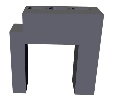
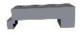
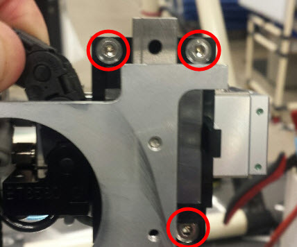
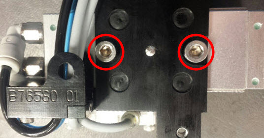
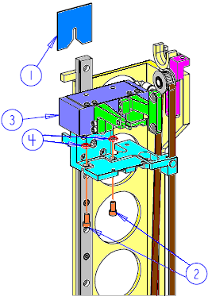

This procedure describes how to replace the reagent pack gripper in the reagent storage module.
Replace the reagent pack gripper in the reagent storage module when the gripper opens or closes slowly.
When replacing the gripper, the flag may need to be saved and installed into the new gripper. Refer to this chart after removing the gripper to determine the action to take.
New Gripper Flag
Gripper Sensor Shape
Action
Simple U

Round
None
Rectangle
Remove the gripper flag from the old gripper, and install the flag on the new gripper.
Small complex

Rectangle
None.
Round
Remove the gripper flag from the old gripper, and install the flag on the new gripper.
Shut down the DxI instrument.
Select
Configure
> PC Admin > System Admin > Shutdown Instrument to exit the software in preparation for powering off the instrument.
Enter the password
Access2Support, and then select
OK.
At the pop-up
You must now turn off the instrument, using the instrument power switch, select
OK.
After the instrument software has shut down, turn off the instrument at the power switch.
Open the SPU.
The SPU is hinged on the left side. The right side is released and can be swung out from the instrument to approximately 45 degrees.
Open the upper left cover of the instrument.
Loosen the locking screw.
The locking screw prevents the SPU from swinging outward from the instrument. It is not necessary to remove the screw because the SPU plate is slotted.
Remove the 3/16-in hex bolt located near the right end of the SPU cover.
Open the lower right access panel on the front of the instrument.
Pull the spring-loaded captive pin that holds the panel (located under the SPU) to the frame.
Grasping the SPU near the right end, swing the right end away from the instrument.
Warning: The SPU off-load area slides forward and rearward as the SPU is swung in and out. To prevent damage to the SPU or the off-load area, confirm that nothing obstructs the movement of the off-load area as the SPU is moved.
(For China and Canada Only.) On the front facing the edge of the Framus assembly, install the Chinese and French labels adjacent to the existing English label.
Note: The labels are in the DxI Installation Kit.
Remove the cover on the reagent storage module (six screws).
Remove and replace the reagent pack gripper.
Do not discard the old gripper until the correct hardware version is assessed. The flag from the old gripper might be used on the replacement gripper.
Two piece gripper mounting block (new design, DxI serial numbers 606147 and 901603 and above).
Note: The two piece gripper mounting block can only be used with round gripper sensors. Shims are not used in the 2 piece design. The gripper is attached directly to the mount.
Manually move the gripper to the top center of the reagent storage module.
Remove the two air lines from the gripper by pushing in on the retention ring and pulling on the tubing.
Remove the gripper from the Z carriage (3 screws).

Remove the gripper from the mount (2 screws).

Attach new gripper to the mount (2 screws).
Attach the gripper to the Z carriage (3 screws).
Attach the 2 air lines to the gripper (the black line goes to the upper fitting).
One piece gripper mounting block (previous design, DxI serial numbers 606146 and 901602 and below).
Manually move the gripper to the top center of the reagent storage module.
Remove the two air lines from the gripper by pushing in on the retention ring and pulling on the tubing.
Remove the gripper (two screws from bottom of gripper). Do not lose the shims.
Determine if the gripper flag must be saved.
Inspect the gripper flag on the replacement gripper.
Inspect the gripper sensor shape on the currently installed Gripper.
Refer to the chart above to determine action.
Install the new gripper (two screws, two washers, up to four shims).
The two washers go between the gripper and the mounting plate. The shims help position the gripper closer to the reagent nests and go between the back of the gripper and the mounting plate.

1
Shims
2
Screws
3
Gripper
4
Washers
Attach the two air lines to the gripper.
The black line goes to the upper fitting.
If the gripper sensor shape is round, then perform the adjustment procedure.
Manually move the gripper to the home position at the lower left corner of the reagent storage module.
Bypass any interlock switches (SPU, reagent door).
Power on the instrument
Initialize with
Remap selected.
Confirm that the gripper operates correctly during the remapping process.
Close the reagent storage module.
Remove any interlock switch bypass devices.
Install the cover on the reagent storage module (six 5/32-in hex screws).
Close the SPU.
The SPU is hinged on the left side. The right side is released and can be swung out from the instrument to approximately 45 degrees.
Warning: The SPU off-load area slides forward and rearward as the SPU is swung in and out. To prevent damage to the SPU or the off-load area, confirm that nothing obstructs the movement of the off-load area as the SPU is moved.
Grasping the SPU near the right end, swing the right end toward the instrument.
Pull the spring-loaded captive pin to attach the panel (located under the SPU) to the frame.
Close the lower right access panel on the front of the instrument.
Insert the 3/16-in hex bolt.
Tighten the bolt that holds the SPU from swinging outward from the instrument (locking screw).
Close the upper left cover of the instrument.
Note: Initialize the instrument after opening and closing the SPU, because a switch is actuated when the SPU is opened.
Shut down and restart the instrument to confirm that the MCC cards are initialized after removing MCC power while closing the covers.
Verify system operation.
Perform system verification as stated in the Verification of Service Repair document .